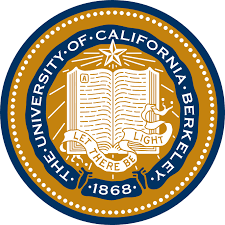
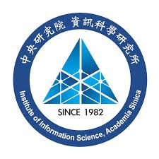
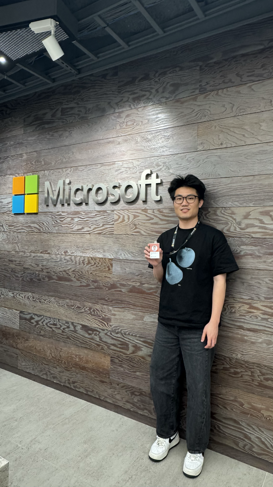
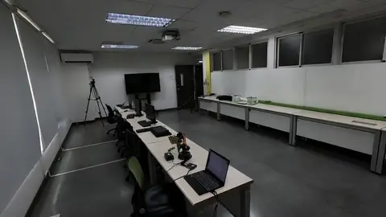
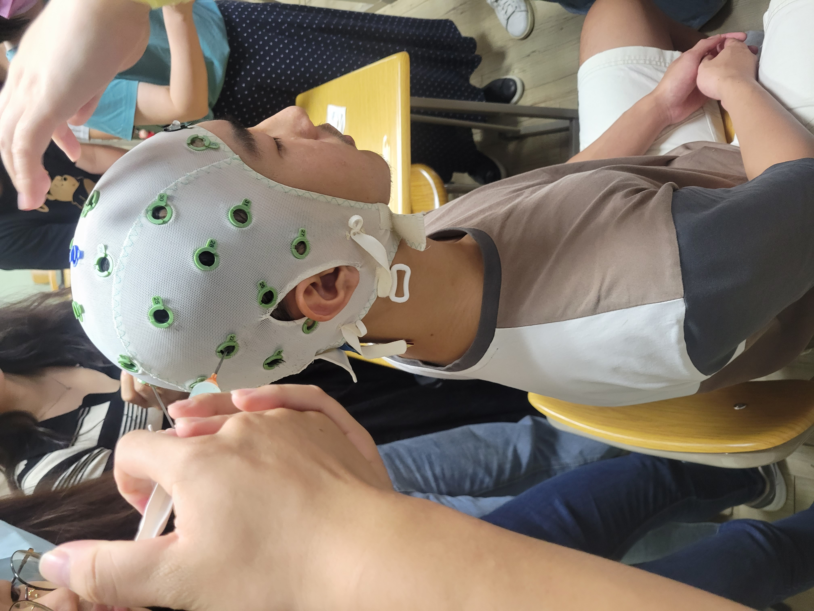
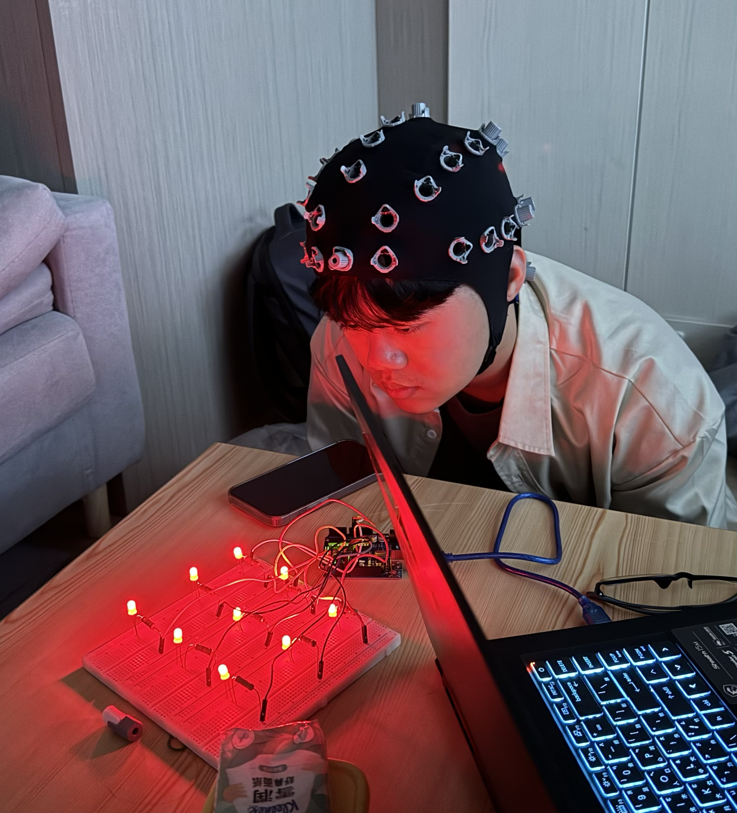

I am currently a Research Assistant at the Institute of Information Science, Academia Sinica, where I focus on computer vision, robotics, and event-based tactile perception for robotic manipulation.
I received my B.S. in Interdisciplinary Program of Engineering from National Tsing Hua University, specializing in Computer Science and Mechanical Engineering. During my undergraduate studies, I also spent two semesters as a Computer Science exchange student at the University of California, Berkeley.
My research interests lie in computer vision, multimodal representation learning, and embodied AI. I am interested in developing intelligent perception systems that enable robots to better understand and interact with the physical world. My long-term goal is to translate advances in AI research into practical technologies that can make a meaningful difference in people's daily lives.
B.S., Interdisciplinary Program of Engineering
(Computer Science + Mechanical Engineering)

University of California, BerkeleyFall 2024 – Spring 2025
Computer Science Exchange Student
Experience

Institute of Information Science, Academia Sinica
Research Assistant | Computer Vision & Machine Learning Lab
July 2025 – Present
My research focuses on event-based optical tactile perception for robotic manipulation. I have developed a high-frequency tactile sensing framework that uses event cameras to capture surface deformation and recognize physical interactions, such as object compliance and slippage. Currently, I am exploring representation learning and tactile dynamics prediction to help robots anticipate future contact states. My goal is to integrate these learned representations into Vision-Language-Action (VLA) models, enabling robots to respond and adapt more efficiently during manipulation tasks.

Microsoft AI (MAI)
Research & Development Intern
September 2025 – March 2026
During my internship at Microsoft AI, I worked on RecapRon, an AI-powered platform that transforms lengthy meeting recordings into concise highlight videos approximately 10% of their original duration. I developed LLM-based workflows for transcript processing, summarization, and script generation, incorporating Segment any Text (SaT) to improve sentence segmentation. I also explored OCR-based slide transition detection to better synchronize presentation content with spoken discussions. This experience gave me the opportunity to work on an end-to-end AI application and understand the engineering challenges of balancing processing efficiency, scalability, and output quality.

Computer Vision Lab, National Tsing Hua University
Undergraduate Research Assistant
January 2025 – December 2025
I worked on a Digital Twin project that explored how to reconstruct realistic 3D environments from a limited number of images. Our goal was to recreate a classroom environment using only four uncalibrated images and integrate it into NVIDIA Omniverse for simulation. I experimented with methods including ViewCrafter, VGGT, and 3D Gaussian Splatting to address challenges in novel-view synthesis, camera estimation, and scene reconstruction. This project introduced me to the challenges of translating computer vision research into practical applications for embodied AI.


Laboratory for Computational Neuroergonomics, National Tsing Hua University
Undergraduate Research Assistant
August 2023 – December 2024
My early research experience focused on analyzing brain responses to visual stimuli using electroencephalography (EEG). I designed an Arduino-controlled LED stimulation system and collected 32-channel EEG signals to investigate individual differences in Steady-State Visual Evoked Potentials (SSVEPs). Through signal processing and machine learning experiments, I compared different approaches for frequency classification, achieving 96.23% accuracy with a neural network model. This experience introduced me to experimental research and strengthened my interest in applying machine learning to real-world sensing problems.
Publications
Seg the HAB: Language-Guided Geospatial Algae Bloom Reasoning and Segmentation
NeurIPS 2025 Workshop on Tackling Climate Change with Machine Learning
Harmful algal blooms pose significant threats to aquatic ecosystems, making accurate monitoring essential. In this project, our team developed ALGOS, a multimodal framework that combines visual representations and language reasoning to identify harmful algal blooms and estimate their severity from satellite imagery. We also developed a GeoSAM-assisted annotation pipeline with human evaluation to generate reliable segmentation masks. Our approach achieved a class IoU of 0.6493, a global IoU of 0.5969, and reduced severity estimation MSE from 3.868 to 2.984 compared with the LLaVA-7B baseline. This work was accepted at the NeurIPS 2025 Workshop on Tackling Climate Change with Machine Learning.
AI Cup Hackathon: Document Question Answering with LLMs
7th Place Among 487 Teams | 2024
Our team developed an AI-powered document question-answering system designed to extract and interpret information from lengthy PDF documents. We combined optical character recognition (OCR), text retrieval, and multiple large language models, including GPT, Gemini, Claude, and Llama, to generate answers grounded in document content. To improve reliability, we designed a voting and verification mechanism that compared responses across models and incorporated previous false-positive cases through few-shot prompting. Our system achieved 92.39% answer accuracy, placing 7th among 487 participating teams.